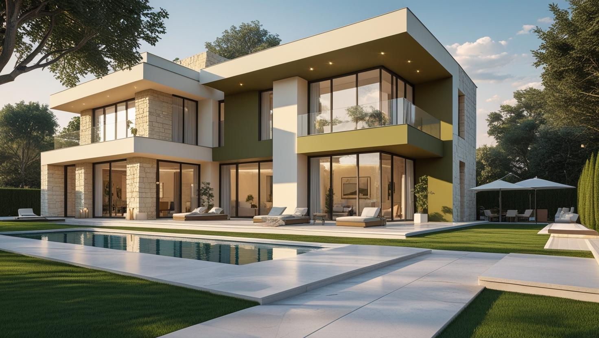
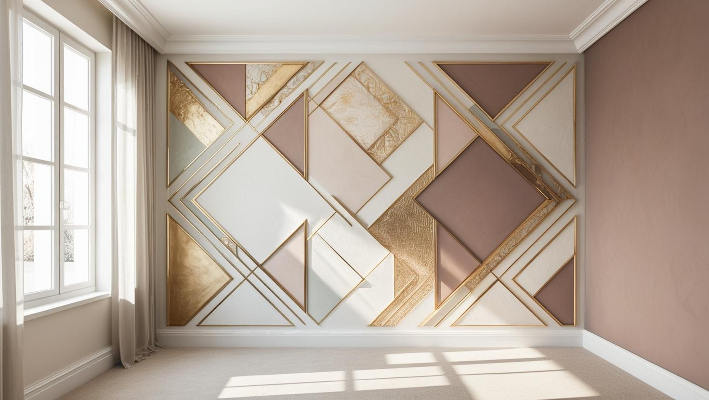

İstanbul Acıbadem Profesyonel Boya Ustası
20 yıllık tecrübemizle Acıbadem'deki apartman daireleri, muayenehaneler ve ofisler için iç cephe ve dekoratif boya uyguluyoruz. Konutta bina düzenine, iş yerinde faaliyet saatlerinize göre çalışma planı yapıyoruz.
Acıbadem'de Boya Badana: Hastane Çevresi Konut ve Ofis Dokusu
Acıbadem boyacı talebi semtin karma dokusundan geliyor. Kadıköy'e bağlı bu semtte sağlık kuruluşları çevresinde ofis ve muayenehane yoğunluğu ile yerleşik apartman stoğu bir arada bulunuyor.
Muayenehane, klinik ve ofis işlerinde öncelik, faaliyetin aksamaması ve temiz teslim oluyor. Çalışmayı mesai dışına ve hafta sonuna alıyor, bölüm bölüm ilerliyoruz. Bu mekânlarda silinebilirliği yüksek yüzeyler uzun vadede fark yaratıyor.
Konut tarafında yapı stoğu ağırlıklı olarak orta yaşlı apartmanlardan oluşuyor; raspa ve tavan kenarı onarımı sık karşılaştığımız kalemler. Acıbadem boya ustası olarak Koşuyolu ve Hasanpaşa'ya uzanan bu apartman dokusunda keşfe onarım kalemleriyle başlıyoruz.
Hizmetlerimiz

İç Mekan Boyama
Acıbadem'de iç cephe işleri bir yanda oturulan apartman dairelerinden, öbür yanda bekleme salonu ve koridoru olan muayenehane ve ofislerden gelir. Dairede yüzey onarımı ve eşya koruma, iş yerinde ise kullanım yoğunluğuna uygun silinebilir yüzey öne çıkar.
- Tavan kenarı ve köşe onarımı
- Bekleme salonu ve koridor boyası
- Kapı, kasa ve kartonpiyer yenileme
- Eşyalı dairede oda oda uygulama

Dış Cephe Boyama
Trafiğe açık cadde cephelerinde biriken toz ve is, yeni boyanın tutunmasını zayıflatır; bu yüzden dış cephe işine yıkama ve yüzey temizliğiyle başlıyoruz. Balkon tavanı, korkuluk ve pencere kenarları teklifte ayrı kalem olarak yazılıyor.
- Cephe yıkama ve is temizliği
- Balkon tavanı ve korkuluk boyası
- Pencere kenarı ve denizlik tamiri
- Kat malikleri kararına göre planlama

Dekoratif Boyama
Konutta salon ya da çalışma odasında vurgu duvarı, muayenehane ve ofiste ise kurumsal rengi taşıyan bir karşılama duvarı düşünülebilecek uygulamalardır. Renk örneğini mekânın gerçek aydınlatması altında deneyerek karar vermenizi öneriyoruz.
- Salon ve çalışma odasında vurgu duvarı
- Resepsiyon için kurumsal renk duvarı
- Mat ve saten bitiş seçimi
- İnce dokulu dekoratif yüzey
Fiyat Tablosu
| Hizmet Türü | Metrekare Fiyatı | Ortalama Süre (100m²) | Garanti |
|---|---|---|---|
| İç Cephe Boyama | 100-200 TL | 2-3 Gün | Uygulama kapsamına göre |
| Dış Cephe Boyama | 180-280 TL | 3-5 Gün | Uygulama kapsamına göre |
| Dekoratif Boyama | 250-500 TL | 4-7 Gün | Uygulama kapsamına göre |
| Ofis Boyama | 150-250 TL | 2-4 Gün | Uygulama kapsamına göre |
Metrekare fiyatları yaklaşık ön değerlendirme aralığıdır. Uygulanacak ölçüm yöntemi, boyanacak alanın kapsamı, yüzey durumu, tamirat ihtiyacı, kat sayısı ve malzeme seçimi keşif sırasında netleştirilir.
Dış cephe boya fiyatları uygulama alanı için yaklaşık 180–280 TL/m² aralığındadır. Kesin hesaplama yöntemi ve teklif; yüzey durumu, bina yüksekliği, erişim veya iskele ihtiyacı, tamirat kapsamı, boya sistemi ve uygulanacak kat sayısına göre keşif sırasında netleştirilir.
Uygulama kapsamına göre işçilik garantisi sağlanır. Garanti kapsamı ve istisnaları teklif veya iş sözleşmesinde belirtilir.
Bu rakamlar İstanbul Boyacılık'ın 2026 gösterge fiyat aralığıdır. Bir piyasa ortalaması değildir. Kesin fiyat; yüzey durumu, hazırlık ve tamirat miktarı, uygulanacak kat sayısı, seçilen malzeme sınıfı, ulaşım ve kat koşulları ile evin eşyalı mı boş mu olduğu keşifte görüldükten sonra belirlenir.
Acıbadem'de aralığı belirleyen şey çoğu zaman yüzey değil çalışma düzeni: mesai dışı ve hafta sonu çalışma, bölüm bölüm ilerleme ve ekipman koruma. Konut tarafında ise çıkan raspa ve tamirat miktarı belirleyici oluyor.
Acıbadem'de Birkaç Kez Boyanmış Dairelerde Boya Öncesi Hazırlık
Yıllar içinde birkaç kez boyanmış bir dairede yeni boyanın kalıcılığı, alttaki katmanların durumuna bağlıdır. Keşifte bu yüzden yalnız duvara değil, kapı, kasa ve mutfak yüzeylerine de bakıyoruz.
- Yağlı boyalı kapı ve kasalar: Eski yağlı boyanın üzerine doğrudan su bazlı boya sürülürse tutunma sorunu çıkabilir; yüzey zımparalanır ve uygun astar kullanılır.
- Önceki onarımlardan kalan yamalar: Farklı zamanlarda alçı ya da macunla kapatılmış bölgeler, ışık vurduğunda yeni boyanın altından belli olabilir; bu nedenle yüzey önce tek düze hale getirilir.
- Mutfakta yağ ve buhar lekesi: Ocak çevresindeki yağlı yüzey temizlenmeden boyanırsa yeni kat iyi tutunmaz ve leke yüzeye geri çıkabilir; önce yağ temizlenir, gerekirse leke kesici astar uygulanır.
Hangi yüzeyde hangi dolgu malzemesinin kullanılacağını alçı ile macun arasındaki farkları anlatan yazımızda ayrıntılı bulabilirsiniz.
Konut ile Muayenehanenin Aynı Binada Olduğu Apartmanlarda Çalışma Saatleri
Aynı apartmanda hem oturan aileler hem muayenehane ya da ofis varsa boya işinin saati iki farklı düzene göre ayarlanır. İş yeri için faaliyetin aksamaması, komşular için gürültü ve ortak alan kullanımı önceliklidir.
Muayenehaneyi mesai dışında boyamak, aynı binadaki komşular için akşam saatlerinde çalışma anlamına gelebilir. Bu yüzden şu konuları işe başlamadan netleştiriyoruz:
- Yönetimin tadilat için izin verdiği saatler ve hafta sonu kuralı
- Zımpara ve raspa gibi gürültülü, tozlu aşamaların hem muayenehanenin kapalı olduğu hem de binanın izin verdiği saatlere denk getirilmesi
- Ortak merdiven ve asansörde malzeme taşınırken zemin ve kabin koruması
- Çalışma günlerinin yönetim aracılığıyla komşulara önceden duyurulması
Muayenehane ve Ofiste Parlaklık ve Renk Seçimi
Silinebilir bir yüzey isterken parlaklık derecesine de karar vermek gerekir: parlaklık arttıkça temizlik kolaylaşır, ama duvardaki kusurlar ışıkta daha çok belli olur.
- Koridor: Güçlü tavan aydınlatması olan koridorlarda saten bitiş seçilecekse duvardaki pürüzlerin boyadan önce giderilmesi gerekir.
- Bekleme salonu: Sonradan rötuş gerektiğinde aynı tonu yeniden bulabilmek için kullanılan ürünün adı ve renk kodu teslimde not edilmelidir.
- Kurumsal renk: Marka rengi tek bir karşılama duvarında kullanıldığında, çalışma odalarında açık ve sakin tonlarla dengelenebilir.
Bitiş türlerinin karşılaştırması için mat, saten ve parlak boya rehberimize göz atabilirsiniz.
Acıbadem'de Keşif ve Yazılı Teklif: Daire ile İş Yeri Arasındaki Farklar
Daire ve iş yeri için keşifte sorulan sorular farklıdır, teklif de buna göre ayrışır. Ofis boyamanın ayrı satırda yer aldığı fiyat tablosu metrekare aralığını gösterir; kesin tutar yerinde görülen işe göre yazılır.
- Dairede: Boyanacak odalar, tavanın dahil olup olmadığı, kapı-kasa ve kartonpiyer işleri, eşyaların yerinde kalıp kalmayacağı.
- Muayenehane ve ofiste: Faaliyetin hangi saatlerde durabileceği, alanın kaç bölümde boyanacağı, duvara monte ekipman, raf ve panoların sökülüp sökülmeyeceği.
- İki durumda da: Seçilen renk, kullanılacak ürün, kat sayısı ve teslim kapsamı teklifte yazılı olarak yer alır.
Acıbadem boyacı ustası olarak aynı keşif ve teklif düzeniyle İstanbul'un diğer semtlerinde de çalışıyoruz; genel hizmet bilgisi için İstanbul boya ustası hizmet ağı sayfamıza göz atabilirsiniz.
Google Haritalar'daki Müşteri Yorumlarımız
Yorumlar, İstanbul Boyacılık'ın Google Haritalar işletme profilinden olduğu gibi alınmıştır. Acıbadem dahil İstanbul genelindeki işlerimize ait yorumların tamamını Google Haritalar profilimizde okuyabilirsiniz.
"Enes beye çok tşk ettim yönlendirigi ustalar gayet güzel işçilik yaptılar poşet olsun süpürgelik üstüne band olsun hepsini yaptılar ve işin sonu mükemmel hiç kirletme olmadı gönül rahatlığıyla tavsiye ediyorum tekrardan çok teşekkürler ediyorum gayet memnun kaldım"
Mehmet Çevik
Google Haritalar yorumu
"Baran ustadan çok memnun kaldık, ellerine emeğine sağlık hakkını helal etsin. Temizliğe özene çok dikkat eden ince işçilik çalışan birisi. Mutlaka çevreme de önereceğim kendisini. 🙏"
Yaren Sert
Google Haritalar yorumu · İç cephe boyama
"Firma ile Mayıs 2026 başında çalışma imkanım oldu gelen Baran Usta işinin gayet ehli hızlı ve tertemiz işini bitirdi fiyatları gayet uygun çalışma performansı gayet yüksek daireyi pırıl tertemiz yapıp çıktılar Baran Usta ve yanındaki arkadaşlara teşekkür ederim"
Tamer Özkenel
Google Haritalar yorumu
Faydalı Bağlantılar
Acıbadem bölgesinde premium iç cephe veya dekoratif boya planlıyorsanız fiyat, metrekare hesabı ve marka seçimi rehberlerini birlikte incelemek daha sağlıklı karar verir.
Acıbadem Boyacı Ustası — Sık Sorulan Sorular
Acıbadem'de dekorasyon yenilerken boya tarafını üstleniyor musunuz?
Evet, işimiz boya tarafıdır: iç cephe boyama, vurgu duvarı ve dekoratif boya, kartonpiyer ve kapı boyama ile boya öncesi alçı ve sıva tamiri. Mobilya, zemin ya da iç mimari tasarım gibi boya dışı işler kapsamımızda değildir; bu işler de yapılacaksa boyanın en sona bırakılmasını öneriyoruz.
Kartonpiyerli tavanlarda boyadan önce onarım gerekir mi?
Çoğu zaman gerekir. Kartonpiyerin tavan ve duvarla birleştiği yerlerde zamanla ince çatlaklar açılır; bunlar boyadan önce dolguyla kapatılmazsa yeni boyada da görünür. Kırık ya da eksik parça varsa onarımı teklifte ayrı kalem olarak yazıyoruz.
Acıbadem boyacı keşfi için muayenehanenin kapalı olması gerekir mi?
Gerekmez. Keşif ölçü alma ve yüzey kontrolünden oluştuğu için muayenehane açıkken, hasta trafiğini aksatmayacak bir saatte yapılabilir. Uygulama takvimini ise keşifte faaliyet saatlerinize göre birlikte belirliyoruz.
Muayenehanemizi hasta kabul ederken boyatabilir miyiz?
Çalışmayı mesai dışına, akşam ya da hafta sonuna alarak faaliyeti aksatmadan ilerleyebiliyoruz. Bölüm bölüm çalışıyor, ekipmanı ve zemini örtüyoruz. Planı keşifte birlikte kuruyoruz.
Sağlık mekânlarında hangi yüzey tercih ediliyor?
Yoğun kullanılan koridor ve bekleme alanlarında silinebilirliği yüksek, dayanımlı iç cephe boyaları tercih ediliyor. Ürün seçiminde üreticinin kendi teknik dokümanı esas alınıyor; biz kullanım yoğunluğuna göre öneri veriyoruz.
Koku çalışma ortamını etkiler mi?
Su bazlı iç cephe boyalarında koku, havalandırmayla kısa sürede belirgin biçimde azalıyor. Faaliyetin sürdüğü mekânlarda çalışmayı kapanış sonrasına alıp havalandırma için süre bırakmak bu etkiyi en aza indiriyor.
İletişim
İşletme merkezi: Orta, Demirkapı Cd. No:1, 34030 Bayrampaşa/İstanbul
İşletme merkezini Google Haritalar’da görüntüleyin
İletişim Bilgileri
Telefon: 0507 832 29 12
E-posta: boyaustamistanbul@gmail.com
10+ Uzman Ustamızla Acıbadem ve çevresine hizmet veriyoruz.
Çalışma Saatleri: 7/24 (Pzt-Paz 00:00-23:59)